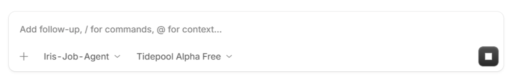

Track B: Builder (change skills and build new ones)
For: people who like to tinker. You do not need to know how to code. Skills are plain text. If you can edit a document, you can do this. Do the warm-up, then pick the challenges that look fun. They are ideas, not a checklist: do them in any order, skip some, or invent your own.
Your goal: change how the agent behaves by editing text, then test that the change worked.
Finished the prework? Then start here.
Setup: get the code and open it
Do this once, before the warm-up. You need the workshop folder on your computer.
- Go to github.com/francescacoo/codebarworkshop2511.
- Click the green Code button, then Download ZIP.
- Unzip the file (double-click it, or right-click and choose Extract all on Windows). You get a folder called
codebarworkshop2511-main. Remember where you put it.
Now open the folder in OpenCode. Choose one way:
With the app (windows and buttons): open OpenCode and add the folder as a project (use the + or "Open project" button and pick the unzipped folder).
With the terminal: open a terminal inside the unzipped folder, then type:
opencode
(How to open a terminal: see the prework. Tip: on Mac, right-click the folder and choose New Terminal at Folder; on Windows, open the folder, type powershell in the address bar and press Enter.)
Check it worked: at the bottom of the OpenCode window, next to the text box, you should see the agent name Iris-Job-Agent. If you see another name, click it and choose Iris-Job-Agent.

The edit-test loop
A suggested way to work, as guidance only:
- Change something in a skill: the instructions, a rule, a tip, whatever you like. Use any editor (VS Code, Notepad, anything).
- Restart opencode (
Ctrl+Ctwice, thenopencodeagain). Skills are read when it starts. - Test with a normal sentence, the way Iris would say it.
- Compare with what you expected. Not right? Go back to 1.
Safety net: broke something? Undo all your changes to the original skills:
git restore .claude/ styles/
(New files you created are not affected. Delete them by hand.)
Warm-up: read a skill like a map
Open .claude/skills/application-tracker/SKILL.md. Mark the four parts:
| Part | Question it answers | Where in the file |
|---|---|---|
Frontmatter (between the --- lines) |
What is this skill, and when should the agent pick it? | top |
| When to use | What belongs here, and what belongs to another skill? | ## When to use |
| Steps | What does the agent do, in order? | ## Steps |
| Rules | What must it NEVER do? | ## Rules |
The most important line is the description:. The agent reads only the
name and description of all six skills, and uses them to choose. The rest of
the file is loaded only when the skill is picked.
Challenge 1: Change what the agent says back - starter
Idea: change how the tracker confirms when Iris says she applied. For example, make it confirm in one short sentence and end with "Good luck, Iris!". Or pick something different that you like better.
Where: .claude/skills/application-tracker/SKILL.md, section When Iris says she applied,
step 4: Confirm to Iris what you saved.
You could change it to, for example: Confirm to Iris in ONE short sentence what you saved. End with "Good luck, Iris!"
Test: restart opencode, then say Iris applied today to Sunflower Preschool, Assistant Teacher
(if the agent asks for the offer, use workshop/fallback/sample-offer.md).
Read the answer.
Done when: the confirmation looks the way you asked, for example one sentence ending with "Good luck, Iris!".
Think about it: you did not touch any code. You changed one sentence of text, and the agent behaves differently. Now try a bigger change, for example making it confirm in German. You could also just ask for German in the chat. What is the difference between asking in the chat and changing the skill?
Challenge 2: Tighten the rules - starter
Idea: make the cover letter shorter and stricter. Use my suggestions, or invent your own rules.
Where: .claude/skills/adapt-documents/SKILL.md, sections Cover letter and Rules.
Suggested changes (pick some, or add your own):
- Maximum 200 words instead of 300 (it is in the Rules section).
- Add a rule: the first sentence of the letter must not start with "I".
- Add the phrases "I am writing to" and "team player" to the banned list.
- Your own idea, for example: end every letter with a one-line joke about preschool.
Test: Adapt Iris's resume and cover letter into English for the offer in workshop/fallback/sample-offer.md
(answer January 5, 2027 if it asks for a start date). Then, in a second terminal:
wc -w applications/*/cover-letter.md
head -3 applications/*/cover-letter.md
Done when: the letter follows the rules you chose. (With my suggestions: 200 words or fewer, a first sentence that does not start with "I", and none of the banned phrases.)
Think about it: did it follow ALL your new rules? Which one did the AI forget? How would you rewrite that rule so it is harder to forget? (Hint: put the check into the Steps: "before saving, count the words".)
Challenge 3: Another country
Idea: Iris now wants a job in Munich. A German application follows different rules than a US one, so give her a second skill for it.
Do NOT overwrite adapt-documents. Make a copy as a new skill:
cp -r .claude/skills/adapt-documents .claude/skills/adapt-documents-de
Then edit .claude/skills/adapt-documents-de/SKILL.md:
- Change
name:toadapt-documents-de. It must be exactly the same as the folder name, or the skill will not load. If you forget, you get no error: the copy is silently ignored, because two skills cannot share one name. - Rewrite the
description:so that it is about German applications ("Bewerbung", "Kita in Munich", ...). - Rewrite US adaptation as German adaptation. Think about what a German Bewerbung usually has: Lebenslauf (not "Resume"), the language of the offer, DD.MM.YYYY or MM/YYYY dates, A4 paper, more detail on education, the "Sehr geehrte Damen und Herren" greeting. Decide which personal details stay.
- Update the Cover letter and Rules (language, length) to match.
- In
adapt-documents(the original), add to When to use:NOT for applications in Germany → use adapt-documents-de.
Test: Create a German application for the offer in workshop/fallback/sample-offer-de.md
Done when: the agent uses your skill (look for Skill "adapt-documents-de"
in the chat) and the documents are in German with the rules you chose.
Think about it: the agent picked a skill on its own. If it had picked the wrong one, what would you change in the descriptions?
Challenge 4: Build a brand-new skill
Idea: add a seventh skill, interview-prep. When Iris is invited to an
interview, it prepares questions and answer outlines for that exact offer. Want a different skill
instead (salary negotiation, a thank-you note, a pep talk)? Go for it.
Start from the template:
mkdir .claude/skills/interview-prep
cp workshop/templates/interview-prep/SKILL.md .claude/skills/interview-prep/SKILL.md
Open the new file and replace every TODO with your own text. (Stuck? Ask a coach.)
Test 1: does it load? After restarting, ask: What skills do you have?
Is interview-prep in the list of seven?
Test 2: does it trigger? Say it the way Iris would, without saying the skill name:
I have an interview at Sunflower Preschool next week. Help me get ready.
(Make sure the offer exists first: adapt documents for workshop/fallback/sample-offer.md.)
Test 3: does it obey the rules?
- ☐ Every answer outline uses only facts from Iris's documents?
- ☐ The file is in
applications/<school>-<position>/interview-prep.md? - ☐ The agent did NOT write into
profile/?
Done when: all three tests pass. If the skill is not picked, the
description: is almost always the problem. Add the words Iris would really say.
Challenge 5: Two tiny skills, with tools
Idea: build a small skill that helps Iris through the search. Pick one, or do both:
monday-plan: Iris says "What should I do this week?" and gets a short plan with the follow-ups to send, the interviews to prepare for, and one encouraging line.after-a-no: Iris says "Sunflower Preschool said no" and gets a kind note, three next steps, and the tracker updated to Rejected.
New idea, tools: a tool is something the agent can do: read a file, write a file, search the web, run a terminal command. A skill can say which tools it may use, and which it must leave alone. Add a section like this to each of your skills:
## Tools
- Read: applications/tracker.md
- Write: only applications/weekly-plan.md
- NEVER search the web. NEVER use the terminal.
Careful: this is an instruction in text, so the AI can still forget it. The real lock is in the agent's permission: block at the top of
.opencode/agents/iris-job-agent.md. Open it and read it: you will see profile/** is locked and the terminal asks first.
Start from this skeleton:
mkdir .claude/skills/monday-plan
Create .claude/skills/monday-plan/SKILL.md and write your own text under each heading:
---
name: monday-plan
description: (What it does, and the words Iris would really say, e.g. "what should I do this week", "plan my week")
---
## When to use
- (When?)
- NOT for (which other skill covers that? use its exact name)
## Steps
1. Read applications/tracker.md.
2. (Which rows matter? Follow-ups due, interviews coming up...)
3. (Write the plan. How long? What tone?)
4. Tell Iris where the file is.
## Tools
- (What may it read? Where may it write?)
- NEVER (what must it not do?)
## Rules
- NEVER invent applications or dates that are not in the tracker.
- Iris is the only one who contacts schools. NEVER send anything for her.
For after-a-no use the same skeleton. Hint: the tracker skill already says that "Rejected" is a status and that only Iris can change a status. Your skill can use that.
Test: the tracker needs a few rows. If it is empty, first say
Iris applied today to Sunflower Preschool, Assistant Teacher (and one more of your own).
Restart opencode, then say it the way Iris would, without the skill name:
What should I do this week?
Sunflower Preschool said no.
Done when: the skill is picked, the answer sounds the way you wanted, and the agent used only the tools you allowed.
Think about it: what is the difference between telling a skill "never search the web" and the agent's permission block saying it? Which would you trust more?
Challenge 6: Make it your own
Turn the agent into a job-search agent for someone else. Follow the "Make it your own" steps in the main README.md, with a fictional
person (a circus acrobat? a retired pirate? a baker who wants to become an astronaut?):
- Invent a person (not you!) and write their CV in
profile/. - Change the roles and the city in
search-job-offers. - Pick your own colors in
styles/brand.md. - Update Who Iris is in
.claude/agents/iris-job-agent.md, then runbash scripts/sync-opencode-agent.shso the opencode agent gets the same text.
Keep it fictional. Do not put your real CV, phone number or address in this project while using a free model.
If a skill does not show up
Go through this list in order:
- Is the file called exactly
SKILL.md(capital letters)? - Is it inside its own folder:
.claude/skills/<name>/SKILL.md? - Does
name:in the file match the folder name exactly? Only lowercase letters, numbers and single hyphens. - Does the file start with
---, thenname:anddescription:, then---? No tabs, no missing colons. - Did you restart opencode?
- Check what opencode sees (second terminal, same folder):
bash
opencode debug skill | grep '"name"'
If your skill is in that list but the agent does not pick it, improve the
description:.
Wrap-up questions
Think about them on your own, or bring them to the group at the end.
- What is the difference between a skill, an agent and a prompt, in your own words?
- Which change did the AI follow best? Which did it ignore?
- Which rules did you put into text, and which would you never trust the AI to follow on its own?
- What would you automate in your own work with a skill?